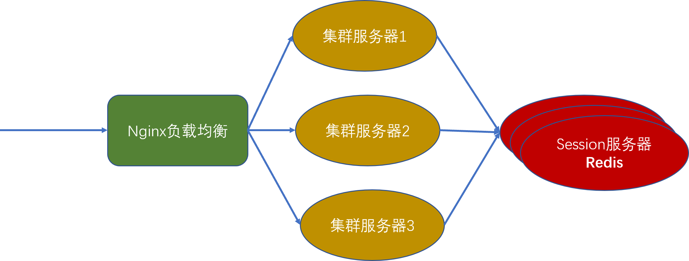
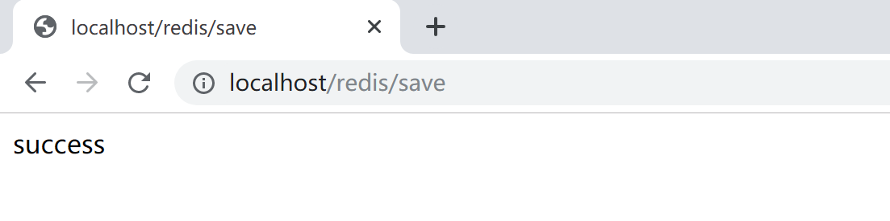
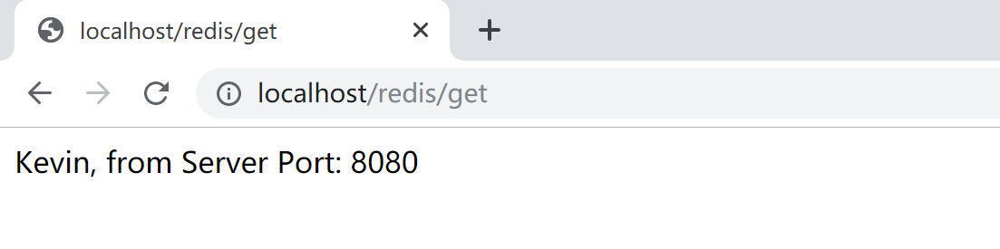

7.3 Session共享
在正常情况下，用户访问一个无状态的http请求，服务器为了记住这个用户，会在服务器端启动（这个session第一次访问服务器）/加载一个session，并通过session id来保持用户端和服务器端的“状态”，比如该用户是否已经登录，是否已经分配了对应的角色，是否具有操作某些资源（菜单）的权限等。
服务端的Session在Servlet规范中就是HttpSession：服务器在内存中创建HttpSession，应用程序在这个session对象中保存对象，每次请求来了，判断session对象中存放的值，根据这个值做对应的事（调用后续业务逻辑：登录，或业务操作）。
在单机服务器环境下，上述机制运行得很好，例如Tomcat天生就能解决上面的所有问题。
随着业务的发展，单机性能不能满足系统对并发、响应时间方面的需求，这时，我们就会通过横向扩展搭建服务器集群。为了保证客户访问的一致性（通过一个域名地址访问），我们可以利用一些软件（Nginx）或硬件（F5）来做负载均衡，将前端接收到的访问请求根据负载均衡策略分发到后台的服务器集群中的某一台服务器上。这样，就会导致同一个用户在不同的时间访问的实际服务器是不同的，而不同的服务器内存中的session不能共享，带来一些不希望看到的后果：比如，用户在A服务上登录了，第二次请求被分发到B服务器上，B服务器的session判断用户并没有登录，跳转到登录页面，要求用户登录。这样的体验是错误的，不符合预期的，当然也是非常糟糕的。
在集群/分布式环境下，如何保证各个服务器实例之间的session共享同步，就成了一个必须解决的问题。
Spring Boot提供了自动化的session共享机制，结合Redis可以非常方便地解决这个问题。其设计原理非常简单：就是把原本存放在各个服务器（如tomcat）内存中地session拿出来，集中存放在一个独立地Redis服务器（可以是高可用集群）上，每个服务器都访问这个独立地Redis服务器，这样无论用户的请求被负载均衡器分发到集群中的哪一个服务器上，都访问的是同一个session。

7.3.1 下载并配置Nginx
到官网 http://nginx.org/en/download.html 下载稳定版 nginx/Windows-1.16.1，然后解压到用户目录（C:\Users\Kevin\nginx-1.16.1）下。
编辑C:\Users\Kevin\nginx-1.16.1\conf\nginx.conf文件，在http节点下添加upstream，名字为tomcat，并在server的location的proxy_pass下，代理转发到upstream，并为其配置超时参数。
upstream tomcat{
server 127.0.0.1:8080 weight=1;
server 127.0.0.1:8081 weight=1;
}
server {
listen 80;
server_name localhost;
#charset koi8-r;
#access_log logs/host.access.log main;
location / {
proxy_pass http://tomcat;
proxy_connect_timeout 1;
proxy_read_timeout 1;
proxy_send_timeout 1;
}
这样，就配置好了一个简单的负载均衡器，我们可以通过http://localhost访问后面两台tomcat服务器（分别在端8080和8081上，权重都为1，也就是说每台服务器承载50%的流量）。
7.3.2 开发示例代码
继续使用上一小节创建的Spring Boot工程，添加Session共享支持。
<dependency>
<groupId>org.springframework.session</groupId>
<artifactId>spring-session-data-redis</artifactId>
</dependency>
<dependency>
<groupId>org.springframework.boot</groupId>
<artifactId>spring-boot-starter-data-redis</artifactId>
</dependency>
<dependency>
<groupId>org.springframework.boot</groupId>
<artifactId>spring-boot-starter-web</artifactId>
</dependency>
在application.properties中配置Redis服务器信息。
spring.redis.database=0
spring.redis.host=localhost
spring.redis.port=6379
spring.redis.password=
创建一个RedisSessionController控制器，在访问/redis/save时将信息存放到session中。
package com.example.redis.controller;
import javax.servlet.http.HttpSession;
import org.springframework.beans.factory.annotation.Value;
import org.springframework.web.bind.annotation.RequestMapping;
import org.springframework.web.bind.annotation.RestController;
@RestController
@RequestMapping("/redis")
public class RedisSessionController {
@Value("${server.port}")
String port;
@RequestMapping("/save")
public String save(HttpSession session) {
session.setAttribute("name", "Kevin");
return "success";
}
@RequestMapping("/get")
public String get(HttpSession session) {
String name = (String) session.getAttribute("name");
return name + ", from Server Port: " + port;
}
}
在同一个session的后续访问/redis/get时，从session中取出之前存放的name值，并给出当前服务器的端口，以指示是从哪个服务器访问的。
7.3.3 测试
双击C:\Users\Kevin\Redis-x64-3.2.100\redis-server.exe运行Redis服务器。
在STS中把项目导出为可运行jar包，然后打开两个命令行终端，分别执行如下语句，启动两个tomcat服务器，将示例项目分别运行于8080和8081端口。
java -jar redis-0.0.1-SNAPSHOT.jar --server.port=8080
java -jar redis-0.0.1-SNAPSHOT.jar --server.port=8081
双击C:\Users\Kevin\nginx-1.16.1\nginx.exe运行Nginx负载均衡服务器。
- 打开浏览器，访问 http://localhost/redis/save 将Kevin值存放到session中的name这个key中。

- 访问 http://localhost/redis/get 检查当前session中存放的name值。当前是由8081服务器提供服务。
- 刷新浏览器，同一session将访问到另外一台服务器（端口为8080），能正确获取session中的name值。

正常情况下，刷新浏览器，会由8080和8081两台tomcat服务器交替提供服务。
由于我们配置的两台tomcat服务器的负载均衡权重都是1，正常情况下刷新一次就可以访问到另外一台服务器，如果没有访问到另外一台服务器，读者可以尝试这多刷新几次，就可以看到上面的测试结果。
本小节示例项目代码：
https://github.com/gyzhang/SpringBootCourseCode/tree/master/spring-boot-redis